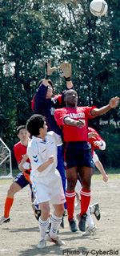
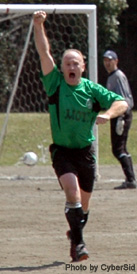
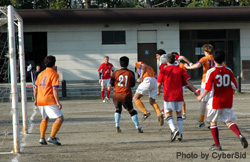
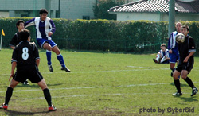
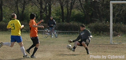
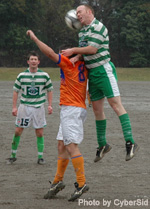
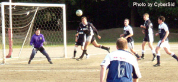
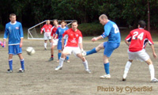
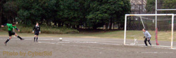

|  |
John of Maritizio challenges the Jetro Keeper for a cross. |
CALL 911, MARITIZIO WON!
Mar 28th, OiFuto. Call 911 bar that is, the sponsors of Maritizio as they'll be very pleased with their teams come from behind win over Jetro. It was a far cry
from the 8 man team that turned out against YC&AC last week, with some new blood in their ranks, Maritizio were up for the challenge. It was Jetro struck who first though,
midway through the 1st half but Maritizio fought back to 1-1 by the break. With more changes at half-time, Maritizio went looking for blood in the 2nd half and soon found themselves
in unchartered waters, in the lead, Kenichi Ohki volleying home at the back post after a good cross from the left. It looked as though they would keep it till the end but
Jetro had other ideas, scoring an equalizer with just 10 minutes to go. Maritizio kept at it however and with just a minute to go, scored again to notch up their first win and
move up to 3rd from bottom.
|  |
Dave Thomas celebrates scoring Hibs 1st goal. |
HIBS STAY IN THE HUNT WITH 3-0 WIN
Hibs beat BFC 3-0 with a second-half deluge to stay in the hunt for the inaugural TML title on Sunday. After an evenly contested first half, Hibs broke the deadlock 10 minutes after the break, Dave Thomas blasting past BFC goalkeeper Sid with a fierce strike following a well-worked move down the left. BFC striker Jon missed a golden opportunity to equalise five minutes later after good work from Evans. It proved costly as Hibs were awarded a highly questionable penalty (read Liverpool v Marseille!) soon afterwards and Bevan calmly fired home from the spot. A defensive breakdown from the BFC gifted Hibs a third 10 minutes from time to secure the points, Keita Narama firing home his 6th of the campaign. It's all up to the Swiss now, awaiting the rescheduling of their match with Sala. more from BFC...
more from Hibs...
|  |
|
Panic in the Barbarians box as Paul Bacon swings in a free kick.
|
PERFIDIOUS ROLL ON
It will take 2 big wins by the Dutch and a heavy defeat for Perfidious Albion for there to be any other outcome than Albion winning Div 2 this season. Their latest victims were a 10 man Barbarians team, holding up the foot of the table. 2 early goals for Albion and they went to cruise control. The captain decided to start making changes to give everyone a game but while Albion were distracted, Barbarians went on the attack. A crafty free kick curled around the wall was poked in at the back post and suddenly, Barbarians were back in it. After the break however, another quick goal had Albion back in command. Two more goals followed, including a screamer by Tetsuro Sotoike and Albion cruised in with a 5-1 win.
|
TITLE RACE GOES TO THE WIRE.
|  |
Kaz Matsumoto fires in a shot as YC&AC sink Nelson. |
Mar 27th, YC&AC. Another hattrick from captain Graeme Lane sent YC&AC to the top of Div 1 and left Nelson struggling at the bottom. The 1st half was quite
even but after 35 minutes, Lane latched onto a loose ball in the box after some nice build up play and tapped it home for 1-0. Nelson hit the bar and were
caught offside for another close effort but still trailed at the break.
In the 2nd half, YC&AC turned up the pressure, creating many more chances and soon their scoring machine got back into action. Lane completed his 3rd Hat-trick with a pair
of good goals, taking his tally to 13 for the campaign. Fellow striker Kaz Matsumoto got his 4th of the season with another fine strike while Joe Takeda completed the rout.
This sets up a great showdown between YC&AC & Hibs for the Championship.......or 2nd!
VAGABONDS DENT DUTCH DREAM
In a tough battle at the top of Div 2, Vagabonds turned spoilers as they held the Dutch to a goalless draw leaving them 3 points behind the leaders with only 2 games to
go. Vagabonds had the better opening period, pressuring the Dutch defence and creating good chances, going just wide on a couple of occasions. The Dutch midfield gradually
took more control but Div 2 top scorer, So Takada, was held at bay by solid defending. In the 2nd half it was a pretty even battle but the Dutch keeper had to pull off a solid
stop when Vags new boy James broke through free on goal. This was one of the few clear chances though and both teams seemed satisfied with the draw.
|
|  |
So Takada slots home his 5th of the season to top the chase for the Div 2 golden boot. |
DUTCH DELIGHT
Mar 21st, Nodai. The Dutch Embassy team secured a firm grip on 2nd place in Div 2 and a chance of going top should the leaders falter,
with a 3-0 win over Shane FC. It was a pretty even battle in the 1st half with few clear chances either way but the game was settled in a 5 minute period,
mid way through the 2nd half.
When a Dutch free kick struck the arm of a defender jumping in the wall, kazu awarded a PK that was nicely put away.
Soon after the restart, Anli Tan received the ball just outside the shane 18yd box. He deftly turned his defender and smashed a left footed volley into
the top left corner. Before Shane could recover from this 2nd blow, the Dutch struck again as a through ball found So Takada who made no mistake as he slid it under the
advancing keeper. Shane came close to pulling one back a couple of times but it seemed the strikers had left their shooting boots at home. This leaves Shane
with little hope of coming in 2nd but Dutch are well in the running.
YC&AC IN STRIKING DISTANCE
Mar 21st, YC&AC. Maritizio turned up with just 8 men to face YC&AC for their Div 1 encounter and were lucky to escape with just a 6-1 defeat. With
2 goals in opening minutes, YC&AC were unable to capitalize and it remained 2-0 till half-time. They upped the scoring in the 2nd half however, with
Captain Graeme Lane completing a hat-trick, to take his tally to 10 for the season and Joe Takeda scoring direct from a corner. Maritizio did get a late consolation
goal, with a nice header from a corner but with only 8 players, they were no match for a full team. With only 2 matches left for the top 4 teams and 3 points
separating them, anything could happen!
|
|  |
Celts get the 'heads up' on Barbarians in their cold, wet encounter. |
CELTS LEAVE BARBARIANS STUCK AT BOTTOM
Mar 20th, OiFuto. It looked more like the old days of football, slipping & sliding in the mud, as for a change OiFuto allowed a match to take place in the rain.
It was Celts who came to terms with the conditions first though, with some nice passing through the middle leading to 2 early goals.
Barbarians held them for the rest of the half though creating some good chances of their own.
The 2nd half started with Celts straight
back on the attack. 3 more goals soon followed, a great curling shot from 25 yards into the top left corner was unstoppable, as was a
low drive from similar range. This finished off any chance Barbarians had of getting a result but they didn't let their heads drop and
were unlucky not to be awarded a goal late on, with the linesman indicating the ball hadn't crossed the line puddle. No more goals
were to come though and Celts climbed 1 place with a comfortable (well cold & wet) win.
more from Barbarians...
|
SALA HEADS ABOVE BFC
Mar 13th, OiFuto, BFC out of running as SALA avenge last years cup final defeat.
|  |
Sala FC goal scorer Guido Geisler clears a cross as BFC try in vain to score. |
Sala were unlucky not to be ahead in the opening minutes as Brian Galaghers headed goal was deemed offside. He made up for in soon after though when a similar chance allowed him a looping header from the back post, out jumping BFC's Malone, to finish well. BFC applied pressure to the SALA defence to no avail and it was SALA who went further ahead before half-time with another headed goal from a well taken free kick. In the 2nd half, things came to a bit of a boil, with the referee over-ruling the BFC linesman on a few occasions and tempers flared. SALA took advantage of the BFC disarray and scored another from a quick free kick finishing 3-0 winners. This puts them in 3rd place and BFC back in 5th.
more from BFC...
|
TML SEES FIRST RED CARD
|  |
Simon Collier of Perfidious tries to close down JETS Matt Turner as clears the ball. |
Mar 6th, OiFuto. It has taken 44 matches for us to see the first red card produced, which is a testament to the sportsmanship and fair play in the
league so far. The recipient of the first red card brought it upon himself, for continual verbal abuse of the referee. His team, Saitama JETS were 2-0 down to
Perfidious Albion at the time but his continuous vocals earned him 2 yellows in quick succession from Quentin O'Mahony. Perfidious went on to win the match 4-0,
with 2 goals from the new brazilian signing Marcio, which almost cements their place in the 1st Division next year.
HIBERNIAN GO LEVEL WITH SWISS
|  |
Bevan Colless sends in Hibs 2nd goal from the penalty spot. |
Earlier at OiFuto, Hibs took a 4-0 first half lead against Maritizio and went on to win 5-1. Two goals apiece for Keita Narama and Bevan Colless sealed any doubts as to who would be victors. This result means they stay behind Swiss however, who have scored 6 more goals and have a 1 goal better difference. With only 2 games left each, it will all come down to the final round of matches in May.
GECKOES CRAWLING UP
At Hachioji Park in Yonohommachi, Geckoes and Vagabonds had the pleasure of playing on a beautiful artificial pitch with probably the nicest surface of any we play on. Unfortunately that didn't help the quality of the football which is probably why it took an own goal to decide the match. Vagabonds had arguably the better chances and possession in the 1st half, but in the 2nd it was Geckoes who were controlling most of the play. An unlucky deflection off the defenders knee from a near post corner settled the scoreline 1-0 in favour of Geckoes, but it was only thanks to a great save by keeper Rob Keyworth that they held onto the lead tid the end. This result puts them above Vagabonds in 3rd position in Div 2.
|
click here to close this window |
|